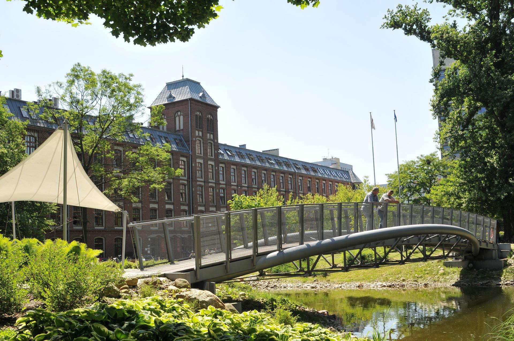

Context
Last time, I was talking to you about my lifestyle as an Erasmus student and telling you how I leave, in this article, I will tell you my feelings about Polish people, at school and in general.

A picture of my univeristy.
People in all-day life:
You can easily find some stereotypes about polish people on the Internet, what I have to say is they are quite true:
Polish people look cold and closed. When you walk on the street, nobody smiles to each other.
When they are with friends, they are very calm compared to French people.
For example, nobody make a lot of noise, even if they are laughing about a good joke.
But, Polish people are always present for you if you need help, especially other students. That’s what I felt when some problems or unpleasant situations happened to me.
For random people in the street, I noticed that they were more cooperative and ready to help if you come by asking help with some words in polish, such as “Dzien dobry, nie mówię po polsku...” which mean “Good morning, I don't speak Polish...”.
They will often answer “Angielsku?” which means “English?” for asking you if you can speak in English.
In this way, you can describe your problem or ask your question and fortunately they understand and speak English very well, but only young people (under 30 years old).
The others don’t understand anything (really).
In other way, when you know some Polish people, they are more friendly, and they don’t look cold and closed anymore.
They are often very kind and fun when you are not a stranger for them.
Teachers and at school:
About the teacher, I noticed that Polish student are closer to their teachers than in France, the ambient is often serious (they are good worker) but decontracted at the same time.
It is also depending on the teacher, as in France but generally no one student feel bad about asking questions, help or to repeat something.
The teachers are not bored to help student and I felt they really want that their students succeed.
Another picture of my univeristy.
What I found very frustrating are the marks calculation.
In Poland, the grades are from 0 to 5 and you need at least 3 to pass the exam, not 2.5 which is the middle value as in France.
In addition, you need to pass each single exam to pass the course and the year of study.
You can’t fail any exam; you must repass it in case you failed. You can have 2 or 3 attempts but sometimes only one!
This is very frustrating because in France we regroup some courses together and you must have at least 10 of 20 points distributed on the median grades of the group of courses.
These differences made my Erasmus hard to pass and today I am not sure that I could not fail any exams...
I hope you enjoyed reading this article about local people behaviour and differences in the educational system, don’t hesitate to read my other articles!
Sources: